Mould · The Wild One · step 3 of your order · 10 Nov 2026
This is step 3 of the order you agreed: a wild mould in violet, under exactly the same rules as yours. It starts bigger than you (600 walkers to your 400) on the right of the dish. Both moulds eat from the same piles, and a pile can only feed so many mouths at once, so whoever has more walkers on a pile takes more of it. Where the two touch, walkers kill each other, and a walker on a well-fed tube holds its ground better than a stray. You win stars by ending bigger than it: 1.5 times its size is one star, 3 times is two, and none of it left is three.
cargo run --release --bin mould, open the fifth dish, THE WILD ONE. Every tool has a second use here: salt walls it off, the lamp drives it off a pile you want, a snip cuts its supply line, and oats lead your mould to the contested middle pile first. Does fighting over food feel like a game, or like watching?
"Your share" is your walkers over both moulds' walkers when the bell rings. The tool hand is a scripted player in the probe that uses all four tools in a fixed way. Each pair is the same seed.
| Hand | Stars per seed | Your share | Ended bigger |
|---|---|---|---|
| Doing nothing | 0 on all 16 | 0.39–0.58 | 9 of 16 |
| Random tools | 0 on 14, 1 on 2 | 0.41–0.64 | 12 of 16 |
| All four tools | 1 on 2, 2 on 10, 3 on 4 | 0.61–1.00 | 16 of 16 |
All four tools beat doing nothing 16–0 and random 16–0 on share (sign test p < 0.0001 each). Doing nothing vs random: 4–12, p 0.08, not significant. Three comparisons, so the bar is p < 0.017.
One tool at a time, 8 seeds each, against doing nothing on the same seeds:
| Only | Stars | Your share | Beat doing nothing |
|---|---|---|---|
| Lamp | 0–2, mostly 1 | 0.55–0.82 | 8–0, p 0.008 |
| Salt wall | 1 on all 8 | 0.64–0.67 | 8–0, p 0.008 |
| Oats | 0–1 | 0.50–0.67 | 6–2, p 0.29 |
| Snip | 0 on all 8 | 0.44–0.59 | 5–3, p 0.73 |
So the lamp and the wall each win alone, but only together do they get 2 and 3 stars. The snip, as the script uses it, does nothing on its own: the cut heals. That's the weakest tool here, and the next thing to look at.
The bottom bar shows "You N wild M" at that moment. On the right, the salt wall is the pale bar in the middle.
seed 4 · 30 s
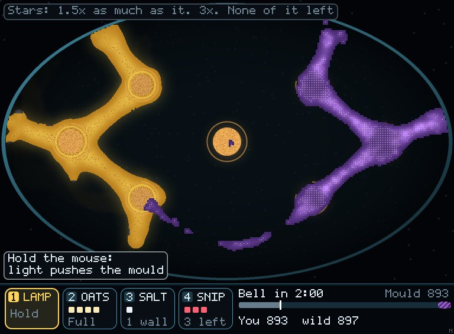
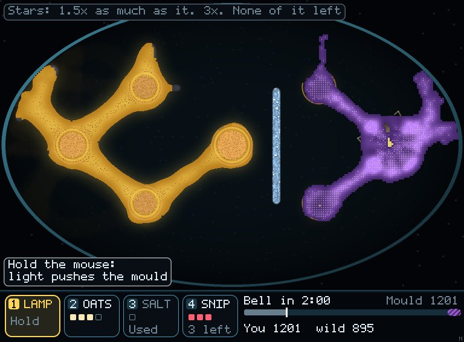
seed 4 · 75 s
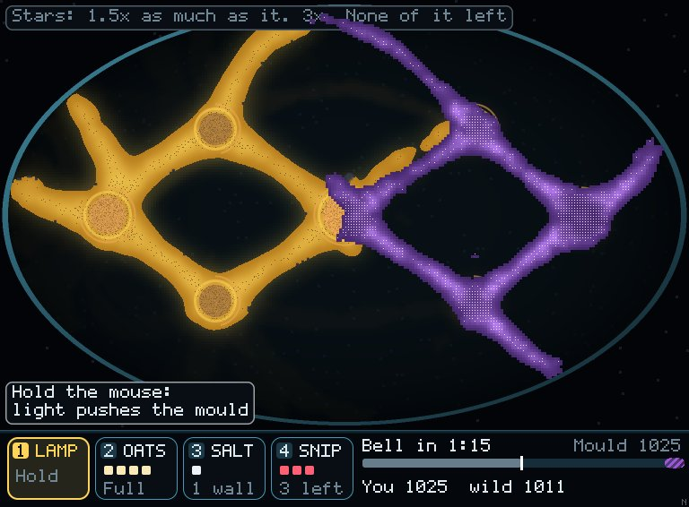
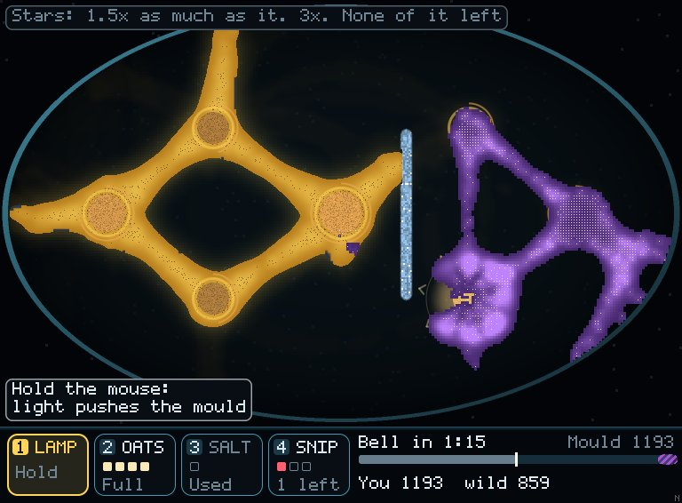
seed 4 · 120 s
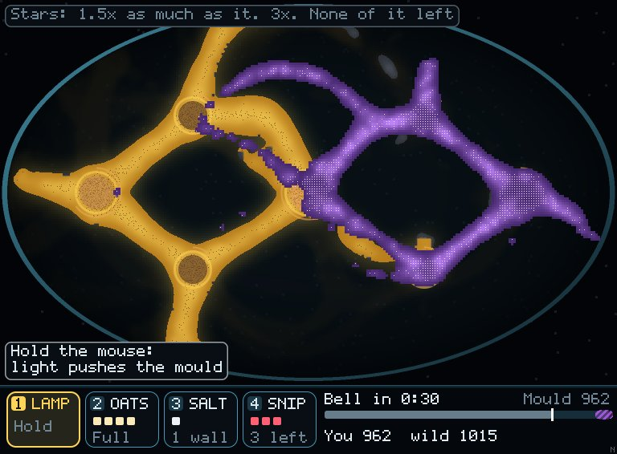
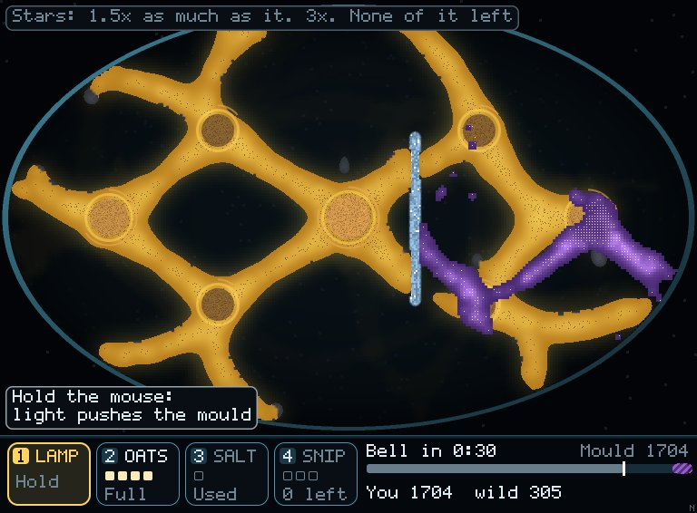
seed 4 · 145 s · the wild one died at 2:26 on the right
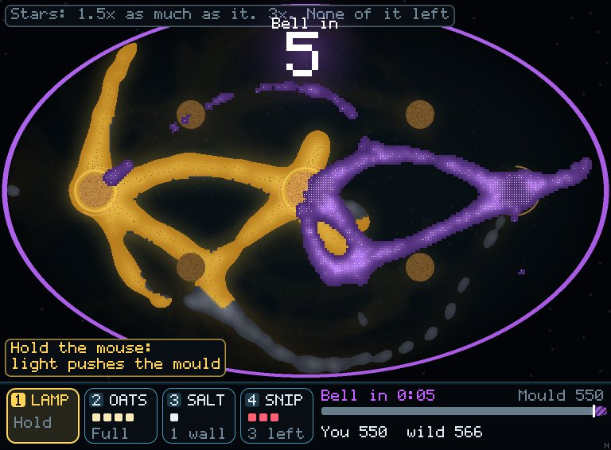
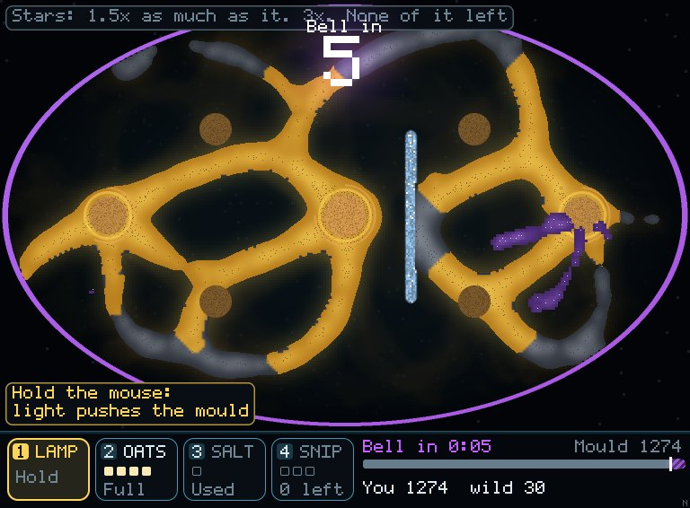
Seed 4 at the bell. Doing nothing: you 439, wild 431, 0 stars, 2,622 of yours and 2,573 of its walkers died fighting. All four tools: you 1,100, wild gone at 2:26, 3 stars, 1,343 / 1,397 died fighting.
seed 1 · 30 s
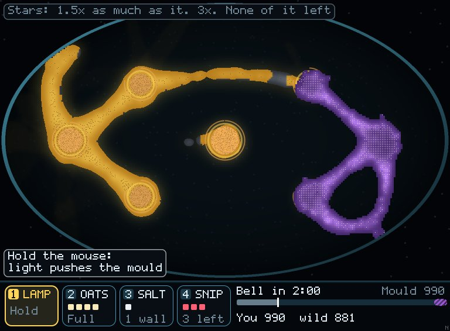
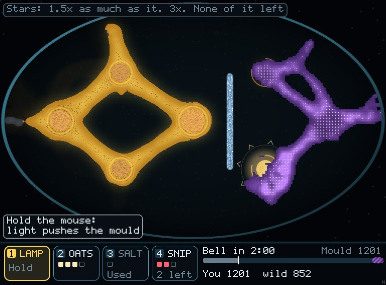
seed 1 · 75 s
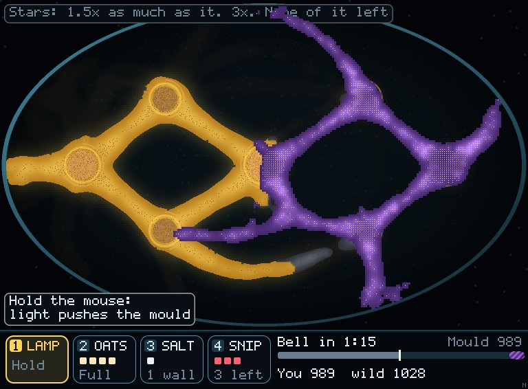
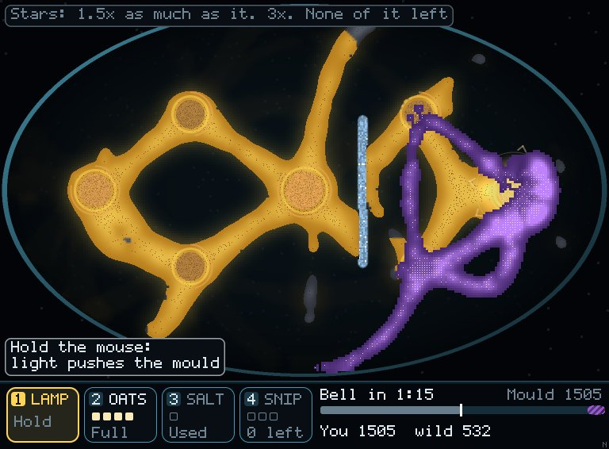
seed 1 · 120 s
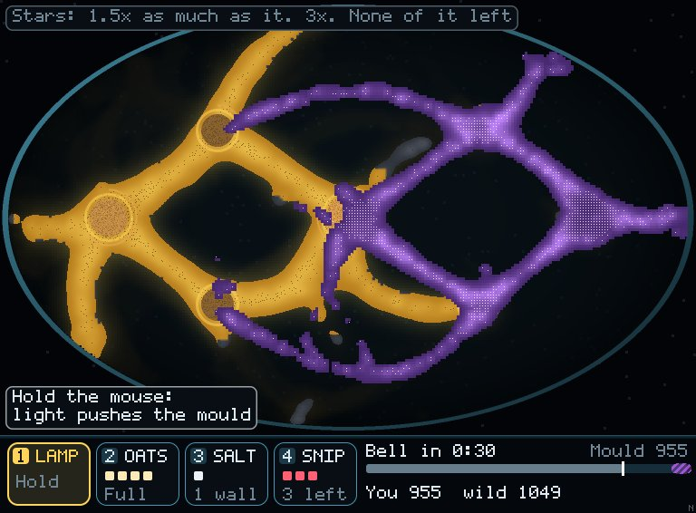
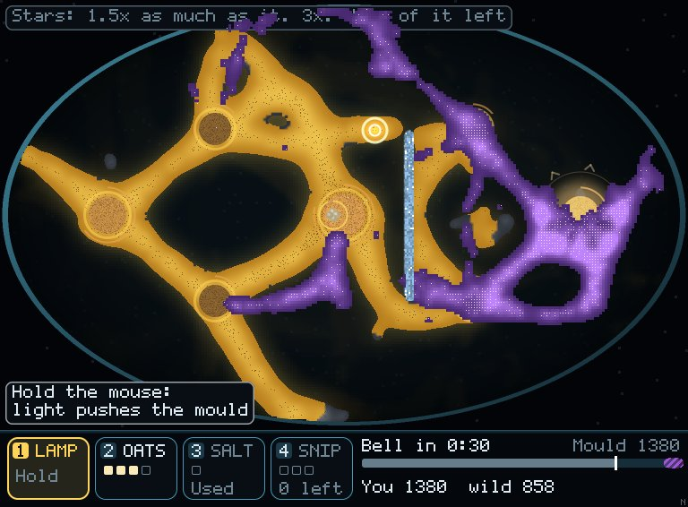
seed 1 · 145 s
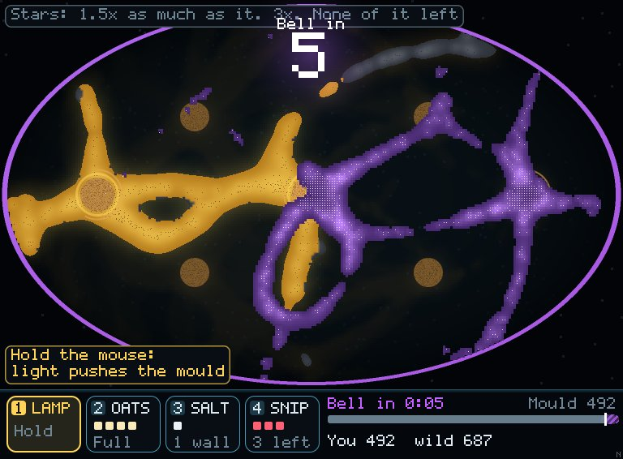
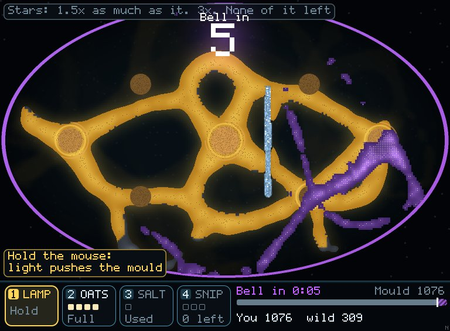
Seed 1 at the bell. Doing nothing: you 354, wild 543, 0 stars, it took more of the food; 2,954 / 2,674 died fighting. All four tools: you 783, wild 204, 2 stars; 1,699 / 1,830 died fighting.
Frame time, free dish, the same run with and without a wild mould on alternating frames, 3 seeds: 4.3–4.9 ms becomes 5.7–6.3 ms a frame, about +1.4 ms. Worst frames are about the same, 15–22 ms either way.
The wild mould is a whole second dish run under the same rules, so it costs about what your mould costs. It is only switched on in this one dish.
Finer tubes (sensor reach about 6) and a re-measure, then the independent review of everything built since the last one. The violet drawing is a first pass, and I've told the looks thread so it can draw it properly.